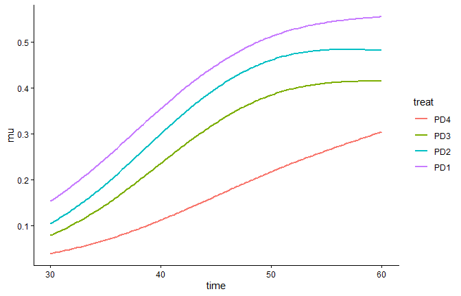
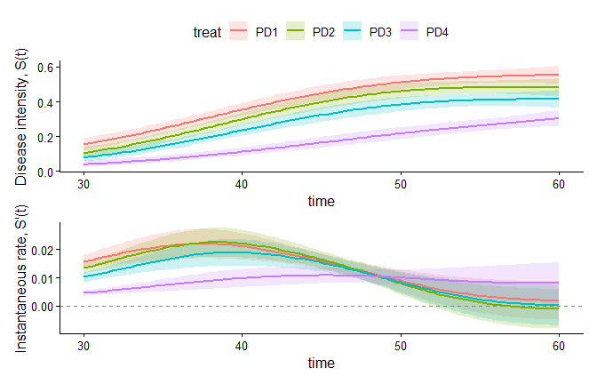
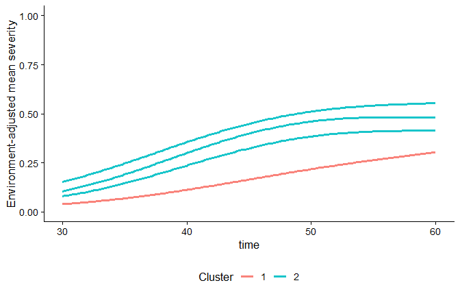
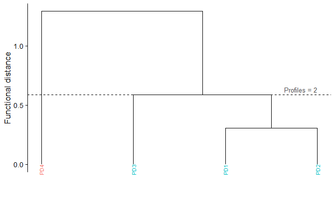
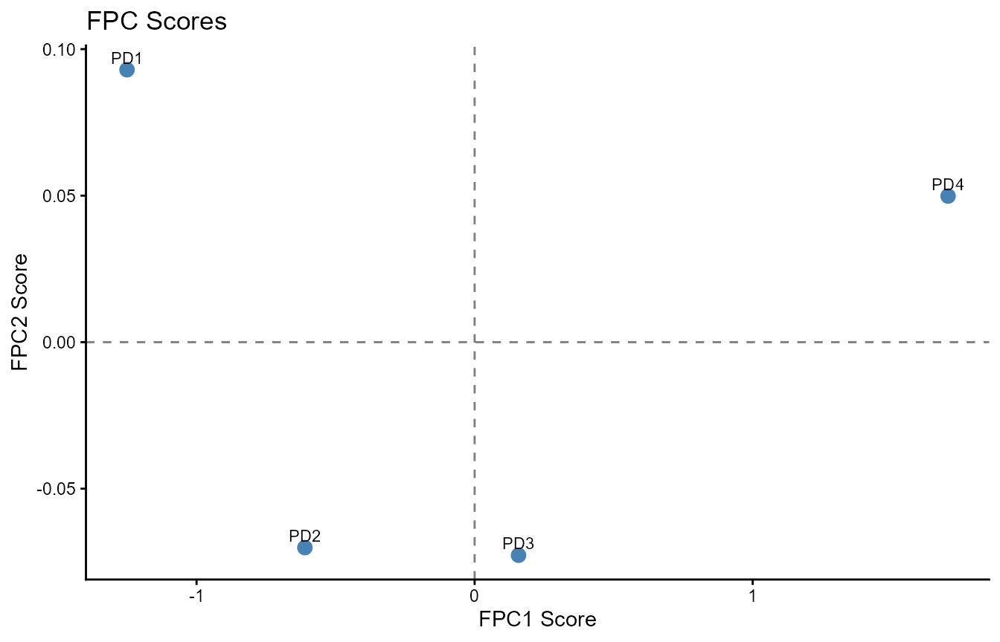

Functional analysis of plant disease progress curves
Source:vignettes/functional-analysis.Rmd
functional-analysis.RmdIntroduction
In plant disease epidemiology, temporal disease progress data are frequently condensed into single scalar summaries such as final severity or the Area Under the Disease Progress Curve (AUDPC). While convenient, these scalar reductions collapse the temporal dimension, discarding critical information about epidemic onset, peak progress rates, acceleration phases, and trajectory shapes.
The r4pde functional analysis framework treats disease progress curves as continuous functional data modeled via Generalized Additive Models (GAMs). This modular API enables researchers to fit smoothed trajectories, compute instantaneous rates of progress, measure whole-curve distances, perform functional PCA, quantify resistance indices, and evaluate environmental stability:
observations (time, response, treatment, block/env)
│
▼
functional_curves()
│
├──► functional_rate() (instantaneous velocity & rate phenotypes)
│
├──► functional_distances() (pairwise curve distances & clustering)
│
├──► functional_pca() (orthogonal modes of trajectory variation)
│
├──► functional_resistance() (Functional Resistance Index & ranking)
│
└──► functional_instability() (genotype-by-environment trajectory stability)Example Data: Soybean Bud Blight
To demonstrate this workflow, we use the package dataset
BudBlightSoybean, which tracks bud blight incidence across
4 planting dates (PD1 to PD4) evaluated at
four assessment dates (30, 40, 50, and 60 days after planting) across 4
randomized blocks:
data("BudBlightSoybean", package = "r4pde")
head(BudBlightSoybean)
#> # A tibble: 6 × 4
#> treat time block y
#> <chr> <dbl> <dbl> <dbl>
#> 1 PD1 30 1 0.1
#> 2 PD1 30 2 0.3
#> 3 PD1 30 3 0.1
#> 4 PD1 30 4 0.1
#> 5 PD1 40 1 0.3
#> 6 PD1 40 2 0.381. Fitting Disease Progress Curves:
functional_curves()
Scientific question: What are the continuous mean epidemic trajectories for each treatment over time, after accounting for experimental design structures such as blocking?
functional_curves() uses penalized splines in a GAM
framework (via mgcv) to estimate smooth, environment- and
design-adjusted trajectories without forcing the data into restrictive
parametric shapes (e.g., strictly logistic or Gompertz):
fc <- functional_curves(
data = BudBlightSoybean,
time = "time",
response = "y",
treatment = "treat",
block = "block",
min_points = 3,
family_try = "quasibinomial",
show_progress = FALSE
)
# Plot fitted mean curves
plot(fc)
The fitted object fc contains the underlying GAM model,
the predicted curves over a dense time grid, and model diagnostics.
2. Instantaneous Velocity and Growth Phenotypes:
functional_rate()
Scientific question: At what instantaneous rate is the epidemic progressing at any given point in time, when does maximum velocity occur (\(t_{r_{\max}}\)), and how long does the active epidemic growth window last?
functional_rate() estimates the first temporal
derivative \(S'(t) =
\frac{dS(t)}{dt}\) directly from the fitted GAM linear predictor
matrix, propagating model covariance to compute pointwise confidence
intervals and extracting key rate phenotypes:
fr <- functional_rate(fc, scale = "response", n_grid = 100)
# Summary of rate phenotypes (r_max, t_r_max, growth duration)
summary(fr)
#> # A tibble: 4 × 10
#> treat r_max t_r_max r_mean r_mean_positive t_growth_start t_growth_end
#> <fct> <dbl> <dbl> <dbl> <dbl> <dbl> <dbl>
#> 1 PD1 0.0220 37.6 0.0133 0.0133 30 60
#> 2 PD2 0.0225 38.5 0.0125 0.0141 30 56.7
#> 3 PD3 0.0190 39.4 0.0112 0.0111 30 60
#> 4 PD4 0.0108 45.2 0.00883 0.00880 30 60
#> # ℹ 3 more variables: growth_duration <dbl>, cumulative_positive_growth <dbl>,
#> # n_growth_windows <int>
# Visualize instantaneous progress rates over time
plot(fr)
Unlike finite differences on raw observations,
functional_rate() provides smooth derivatives with rigorous
uncertainty estimation, revealing whether treatments delay onset, reduce
peak velocity, or shorten the active epidemic duration.
3. Whole-Trajectory Distances and Clustering:
functional_distances()
Scientific question: How different are treatments across the entire continuous temporal domain, and which treatments form cohesive clusters of epidemic behavior?
functional_distances() calculates \(L_2\) functional distances by integrating
squared differences between fitted curves across the shared time
domain:
\[D_{ij} = \sqrt{\int_T (f_i(t) - f_j(t))^2 dt}\]
It performs hierarchical clustering and profile identification:
fd <- functional_distances(fc, cluster_k = 2, show_progress = FALSE)
# Plot environment-adjusted curves colored by functional cluster
plot_curves(fd)
# Plot hierarchical clustering dendrogram
plot_dendrogram(fd)
4. Orthogonal Trajectory Decomposition:
functional_pca()
Scientific question: What are the dominant modes of variation that distinguish epidemic curves across treatments?
Functional Principal Component Analysis (FPCA) decomposes variation among epidemic trajectories into orthogonal temporal components (eigenfunctions), allowing researchers to differentiate between overall epidemic magnitude and timing/shape shifts:
# Retain 2 components for score biplot
fpca <- functional_pca(fc, n_components = 2)
# Print variance explained by the functional principal components
print(fpca)
#> A functional_pca object
#> Number of curves: 4
#> Number of time points: 140
#> Number of retained FPCs: 2
#>
#> Variance Explained:
#> # A tibble: 2 × 3
#> FPC prop_var cum_var
#> <chr> <dbl> <dbl>
#> 1 FPC1 0.996 0.996
#> 2 FPC2 0.00437 1.000
# Biplot of treatments in FPCA score space
plot(fpca, type = "scores")
5. Functional Resistance Profiling:
functional_resistance()
Scientific question: How do treatments rank in functional disease suppression relative to a susceptible reference, and are differences statistically supported?
functional_resistance() computes the Functional
Resistance Index (FRI) and Stability-Adjusted FRI (SAFRI) by
benchmarking each curve’s integral against a designated susceptible
check:
# Using 'PD1' as the reference susceptible treatment
fres <- functional_resistance(
fc,
reference = "PD1",
group_method = "quantile",
n_groups = 2
)
# View resistance scores and rankings
fres$table
#> # A tibble: 4 × 5
#> treat FRI SAFRI rank_global resistance_class
#> <chr> <dbl> <dbl> <int> <fct>
#> 1 PD4 7.37 7.37 1 Class 1
#> 2 PD3 3.59 3.59 2 Class 1
#> 3 PD2 1.68 1.68 3 Class 2
#> 4 PD1 0 0 4 Class 26. Environmental Instability:
functional_instability()
Scientific question: When multi-environment trials (locations, years) are available, which genotypes exhibit stable epidemic suppression versus high genotype-by-environment variability?
When epidemics are monitored across multiple locations or seasons
(using the environment parameter in
functional_curves()), functional_instability()
computes Normalized Functional Instability (NFI):
\[nFI_g = \frac{\frac{1}{E_g} \sum_{e=1}^{E_g} \int_T (f_{ge}(t) - \bar{f}_g(t))^2 dt}{\int_T \bar{f}_g(t)^2 dt}\]
It can also decompose instability into spatial (location-driven) and
temporal (year-to-year) components via env_sep.
Summary
The r4pde functional analysis API provides a coherent, principled alternative to scalar disease metrics. By chaining modular functions:
\[\text{data} \xrightarrow{\texttt{functional\_curves()}} \begin{cases} \xrightarrow{\texttt{functional\_rate()}} \text{rate phenotypes & derivatives} \\ \xrightarrow{\texttt{functional\_distances()}} \text{hierarchical curve clustering} \\ \xrightarrow{\texttt{functional\_pca()}} \text{dominant trajectory modes} \\ \xrightarrow{\texttt{functional\_resistance()}} \text{standardized resistance ranking} \\ \xrightarrow{\texttt{functional\_instability()}} \text{G}\times\text{E stability decomposition} \end{cases}\]
researchers gain deep insight into epidemic dynamics, treatment efficacy, and host resistance.